本文将以ReentrantLock的调用为例，说明AbstractQueuedSynchronizer提供的Conditon等待功能。
Condition接口的实现
J.U.C包提供了Conditon接口，用以对原生的Object.wait()、Object.notify()进行增强。
Condition接口的实现类其实是在AQS中——ConditionObject，ReentranLock的newConditon方法其实是创建了一个AbstractQueuedSynchronizer.ConditionObject对象：
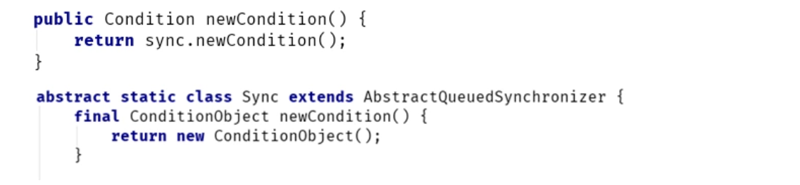
Condition作为AQS的内部类，复用了AQS的结点，维护一个条件队列，队列初始时的结构如下：
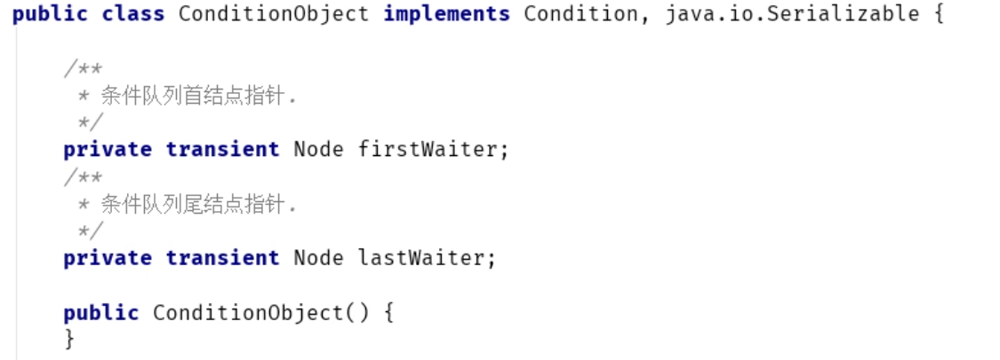
示例
假设现在有3个线程：ThreadA、ThreadB、ThreadC，一个Conditon实现对象。
ReentrantLock lock = new ReentrantLock();Conditon con = lock.newConditon();
线程将以以下的时序调用：
//ThreadA先调用lock方法获取到锁，然后调用con.await()
//ThreadB获取锁，调用con.signal()唤醒ThreadA
//ThreadB释放锁
ThreadA获取到锁后，首先调用await方法
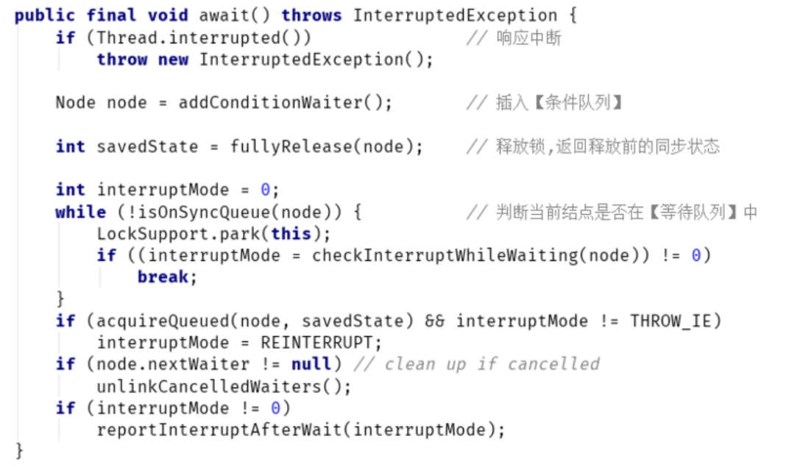
上述方法，先对线程中断做一次预判断，然后将线程包装成结点插入【条件队列】，插入完成后，条件队列的结构如下：
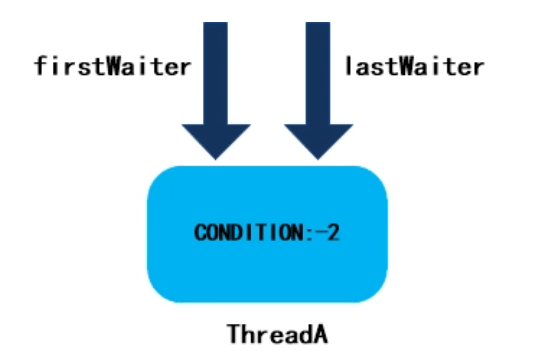
我们知道，await()方法会释放当前线程持有的锁，这个过程其实就是fullyRelease方法的作用：
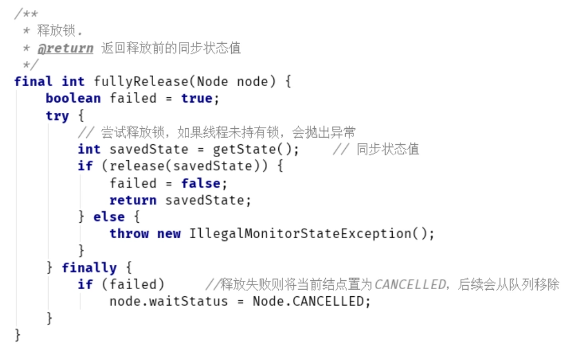
然后，判断当前结点是不是在【等待队列】中，不在的话就会阻塞线程。
最终线程A释放了锁，并进入阻塞状态。
ThreadB获取到锁后，首先调用signal方法
由于Condition的signal方法要求线程必须获得与此Condition对象相关联的锁，所以这里有个中断判断：
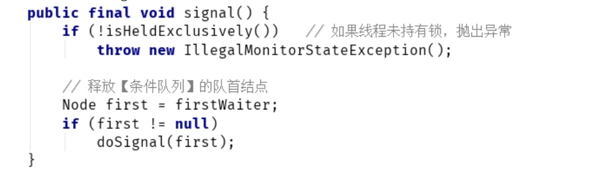
然后，会调用doSignal方法，删除条件队列中的队首CONDITION类型结点：
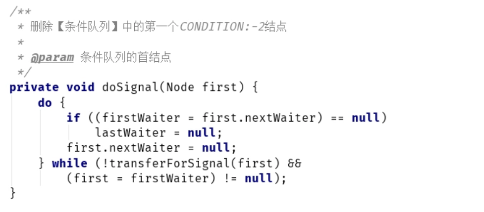
删除完成后，transferForSignal方法会将CONDITON结点转换为初始结点，并插入【等待队列】：
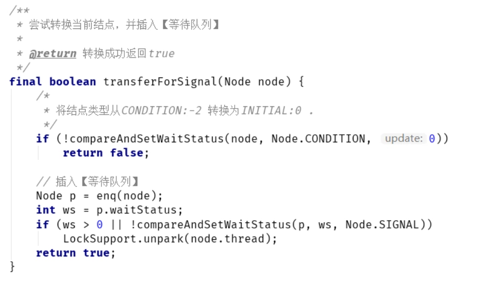
此时，【条件队列】已经空了：
而ThreadA被包装成新结点后，插入【等待队列】：
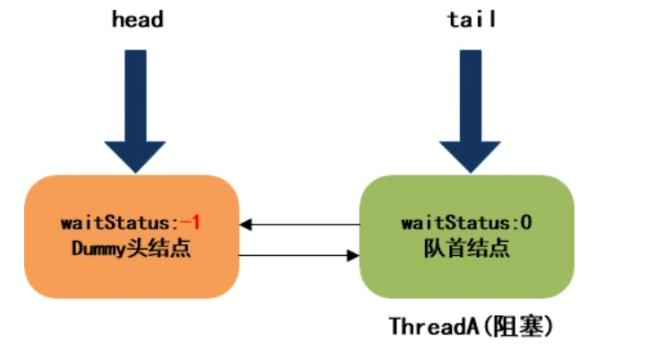
ThreadB释放锁
终于ThreadB释放了锁，释放成功后，会调用unparkSuccessor方法（参加AQS独占功能的讲解），唤醒队列中的首结点：
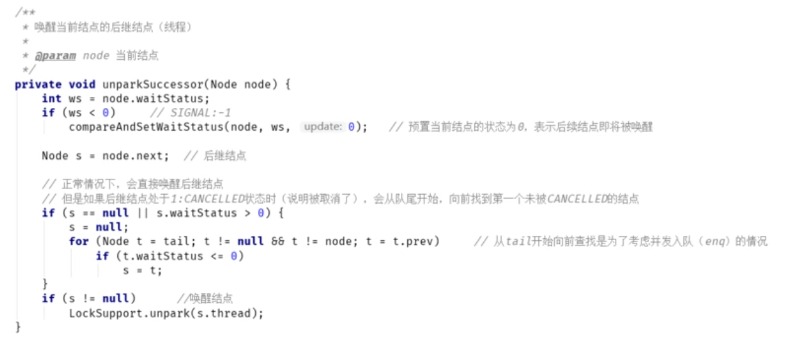
最终等待队列结构如下：
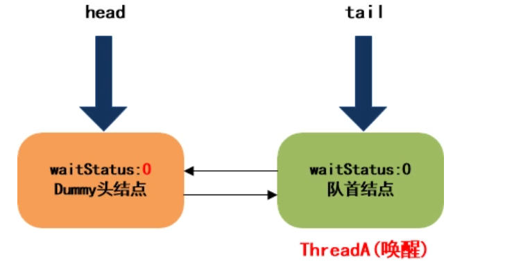
ThreadA从唤醒处继续执行
ThreadA被唤醒后，从await方法的阻塞处开始继续往下执行：
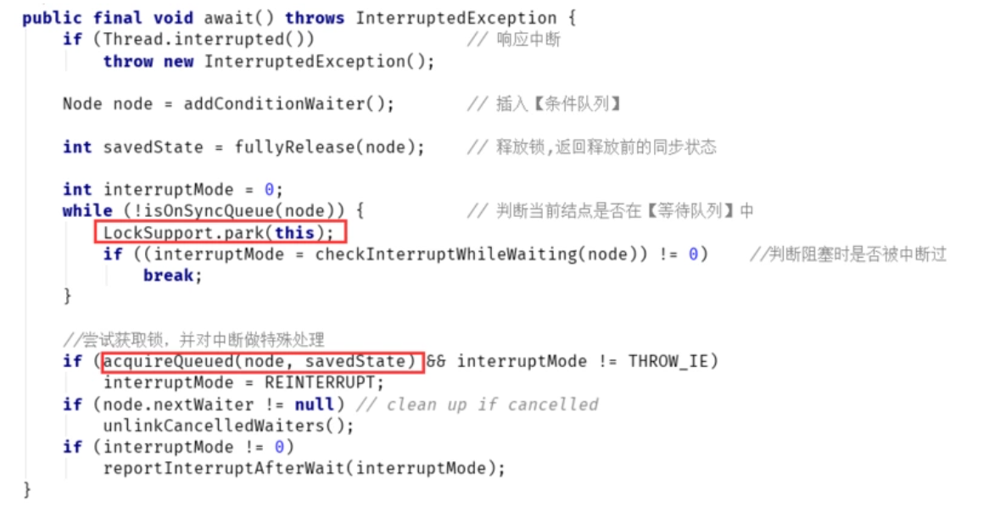
之后会调用acquireQueued方法再次尝试获取锁，获取成功后，最终等待队列状态如下：
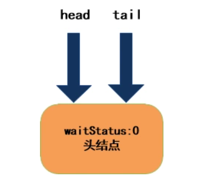
总结
本章以ReentrantLock的公平锁为例，分析了AbstractQueuedSynchronizer的Condition功能。
通过分析，可以看到，当线程在指定Condition对象上等待的时候，其实就是将线程包装成结点，加入了条件队列，然后阻塞。当线程被通知唤醒时，则是将条件队列中的结点转换成等待队列中的结点，之后的处理就和独占功能完全一样。
除此之外，Condition还支持限时等待、非中断等待等功能，分析思路是一样的，读者可以自己去阅读AQS的源码，通过使用示例，加入调试断点一步步看内部的调用流程，主干理顺了之后，再看其它分支，其实是异曲同工的。